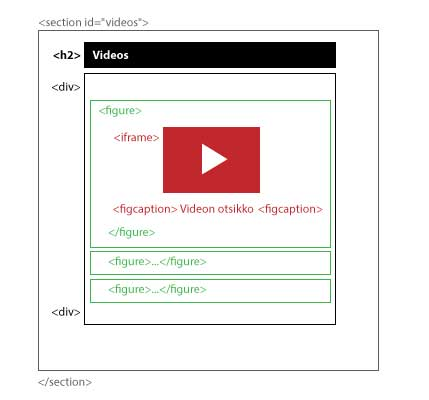

Web-Sovelluksen Käyttöliittymä
html_css_basics
|
├── demos
│ └── ...
|
├── exercises
│ ├── ...
│ └── e9
│ ├── style.css
│ ├── index.html
│ └── img
│ ├── {fav_icon.png}
│ ├── bird1.jpg
│ ├── bird2.jpg
│ └── bird3.jpg
|
Toteuta puhelinsovellusta muistuttava nettisivu
- Sivuston aiheen ja linkit voit valita itse
- Kaikki html koodi on yhdessä index.html tiedostossa ja tyylit style.css
- Vain yksi pääsisältöelementti on kerrallaan näkyvissä (photos, videos tai stories)
- Alavalikosta vaihdetaan näkyvissä olevaa elementtiä, mutta käyttäjä pysyy silti sivulla index.html
- Toteutus on siis single-page-application (SPA)
- Käynnistä Live Server ja tarkastele sivua responsiivisessa kehittäjätilassa
-
Firefox: Hiiren oik. > Inspect > Resposive Design Mode (puhelinkuvake)
-
Chrome: Hiiren oik. > Tarkista > Toggle device toolbar (puhelinkuvake)
HTML
- Lisää fav-icon headiin ja muut elementit bodyyn
- Lisää navigaatio (nav) jossa on lista (ul) jossa on listakohtia (li)
- Listakohtia on 3 ja niiden sisällä on linkki (a) jonka sisällä on svg-kuva ja linkkiteksti
- Käytä esim. Heroicons sivua:
Etsi sopiva kuvake. Vie hiiri kuvakkeen päälle ja klikkaa Copy SVG
Liitä leikepöydälle saamasi koodi li-tagin sisälle linkkitekstin kanssa
- Tee main-elementti ja lisää sen sisälle 3 section-elementtiä
- Laita sectioneille yksilöivät id:t joihin viittaat navigaation a-tageissa (href)
- Kunkin sectionin sisällä on h2 jossa lukee osion nimi (photos, videos, stories)
- Muu osion sisältö on kääritty ylimääräiseen diviin
Section #photos
- Lisää otsikko h2 Photos
- Lisää kuvia ja kuvatekstejä käyttäen figure-figcaption yhdistelmää
Section #videos
- Käytä edellisen tapaan figure-figcaption yhdistelmää,
mutta vaihda img tagin tilalle YouTube iframe upotuskoodi.
- Poista iframen width ja height parametrit

Section #stories
- Lisää article tageja joissa on h3 otsikko artikkelille
- Tekstisisältö on yhdessä tai useammassa p-tagissa
- Lisää kirjoittajan tiedot i-tagilla
CSS
- Valitse mieleisesti Google Fontti ja importtaa siitä italic, regular ja bold -leikkaukset
- Määrittele valmiiksi linkkien ja tekstien värejä :root muuttujiksi
- Lisää myös navigaation korkeus (50px) ja otsikon korkeus (50px) -muuttujat
- laita * selektorille box-sizing: border-box;
- body
- Nollaa bodyn marginaalit
- Aseta valitsemasi Google Fontti
- aseta taustaväri ja tekstin väri
- h2
- h2 toimii sivun otsikkona
- aseta sille position: fixed;
- ja leveys 100%
- asemoi otsikko ylös ja vasemmalle top: 0; left: 0;
- aseta korkeudeksi otsikon korkeus -muuttuja
- keskitä teksti ja aseta otsikon väri
- nav
- aseta alanavigaation taustaväri ja tekstin väri
- aseta korkeudeksi navigaation korkeus -muuttuja
- aseta position: fixed; ja bottom: 0;
- nyt navigaatio pysyy sivun alalaidassa ja on helpompi käyttää kännykällä
- aseta leveydeksi 100%
- nav ul
- nollaa marginaalit ja paddingit
- Lisää display:flex; justify-content: space-around;
- keskitä flex elementit myös pystysuunnassa
- piennnä fonttia tarvittaessa
- aseta korkeudeksi 100%
- nyt navigaation linkit ovat tasaisin välimatkoin alapalkissa
- nav a, nav a:visited
- aseta linkkien väri
- poista alleviivaus
- aseta display: flex; flex-direction: column;
- jolloin linkin kuvake ja teksti menevät päällekkäin
- nav svg
- aseta kuvakkeen korkeus esim. 20px
- vaihda kuvakkeen väriä stroke: rgb(0, 255, 200); tai käytä määrittelemääsi muuttujaa
- Jos kuvake ei muodostu ääriviivoista, kuten Heroiconsin kuvakkeet niin kokeile fill: rgb(0, 255, 200);
- Tee hover-pseudo ja vaihda linkkitekstin ja kuvakkeen väriä hover-tilassa
- main h2 + div
- Aseta main elementin korkeus siten, että se täyttää koko ruudun miinus ylä ja alapalkkien korkeus
- height: calc(100vh - var( --nav_height) - var(--heading_height));
- lisää ylämarginaalia otsikon korkeuden verran
- keskitä teksti vasemmalle
- aseta overflow-y: auto; jotta main elementtiä voi scrollata jos sisältö ei mahdu ruutuun
- lisää padding: 1em;
- p
- pienennä paragraph pagin ylämarginaalia
- section
- aseta display: none;
- koska vain yhden sectionin on tarkoitus olla kerrallaan näkyvissä
- #photos
- Jos ensimmäisen sectionisi id on photos, niin laita se oletuksena näkyville display: block;
- section:target
- aseta display: block; koska klikattaessa sectionin tulee ilmestyä näkyville
- section:target ~ #photos
- aseta display: none; koska muiden kuin klikatun sectionin pitää samalla piiloutua
- figure
- poista figuren marginaalit, paitsi alamarginaali
- figure img
- aseta maksimileveys 100%
- figcaption
- boldaa teksti
- h3
- säädä väliotsikon marginaaleja pienemmäksi
- i
- tasaa teksti oikealle
- lisää display: block; jolloin i tagi täyttää koko parentin leveyden ja tasaus toimii
- vaihda tekstin väri harmaaksi
- iframe
- lisää leveys 100%
- lisää aspect-ratio: 16/9; jolloin korkeus määräytyy leveyden perusteella mittasuhteet säilyttäen
PS. Tallenna GitHubiin